One Piece is one of the most popular manga and anime series in the world. It was created by Eiichiro Oda and first began as a manga in 1997. The anime adaptation started in 1999 and is still ongoing.
The main character, Monkey D. Luffy, dreams of becoming the King of the Pirates.not because he wants to rule others, but because he believes it means being the freest person on the seas.
As a child, Luffy accidentally eats a mysterious Devil Fruit, giving his body the properties of rubber. While this grants him incredible abilities, it comes with one major drawback: he loses the ability to swim, which is a serious disadvantage in a world of oceans.
In *One Piece*, Luffy dreams of becoming the Pirate King. To achieve this, he sets sail across the seas in search of the legendary treasure known as the One Piece while gathering a loyal crew to join him on his journey. As he travels from island to island, he meets new friends who become his crewmates. Along the way, Luffy faces countless powerful enemies and battles them—sometimes to protect his crew, and other times to save innocent people from oppression. However, Luffy is never driven by brutalety or a desire to rule others. His true goal is to became pirate king. With every adventure and battle, both Luffy and his crew grow stronger and overcome greater challenges. The One Piece remains the greatest mystery in the world, as only Gol D. Roger and his crew know its true nature. Whoever discovers the One Piece will earn the title of Pirate King. The final destination of this incredible journey is the mysterious island of Laugh Tale, where the legendary treasure is said to be hidden.
here is the link for all arc explination in Tamil -
or
Read the story in below

The **Romance Dawn Arc** is the first arc of *One Piece* and introduces Monkey D. Luffy, a boy who dreams of becoming the King of the Pirates. Inspired by the pirate Shanks, Luffy accidentally eats the Gum-Gum Devil Fruit, gaining a rubber body but losing the ability to swim. After Shanks saves Luffy's life and entrusts him with his treasured straw hat, Luffy sets out on his own adventure. Along the way, he befriends Koby, defeats the pirate Alvida, rescues the swordsman Roronoa Zoro from the corrupt Marine Captain Morgan, and invites Zoro to join his crew. Together, they form the Straw Hat Pirates and begin their journey to find the legendary treasure, the One Piece.

The **Orange Town Arc** is the second arc of *One Piece*. After leaving Shells Town, Luffy and Zoro arrive at Orange Town, which has been taken over by the pirate captain Buggy the Clown. There, they meet Nami, a skilled thief who steals from pirates and dreams of drawing a map of the entire world. Although Nami initially tricks Luffy and Zoro, she later teams up with them to defeat Buggy and free the town from his control. After Buggy is defeated, Luffy, Zoro, and Nami continue their journey together in search of the legendary treasure, the One Piece.

The **Syrup Village Arc** begins when Luffy, Zoro, and Nami arrive at Syrup Village, where they meet Usopp, a young man known for telling tall tales but who dreams of becoming a brave warrior of the sea. They soon discover that Captain Kuro, a former pirate pretending to be a butler, plans to kill the wealthy Kaya and steal her fortune. Luffy and his friends stop Kuro's plan after a fierce battle and save the village. Grateful for their help, Usopp joins the Straw Hat Pirates as their sniper, and the crew receives their first real pirate ship, the **Going Merry**, to continue their adventure.
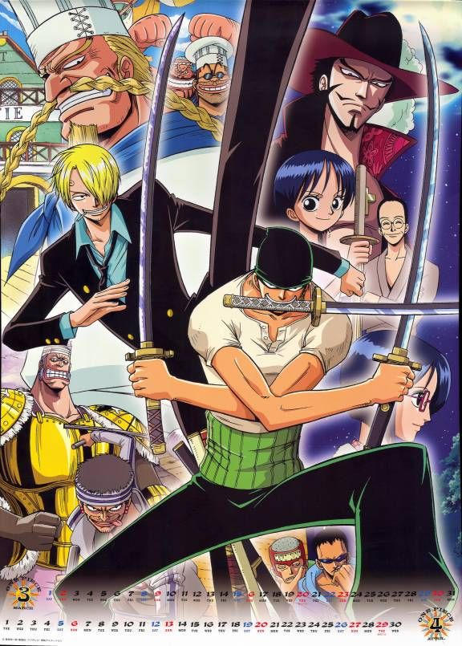
The **Baratie Arc** takes place at the floating sea restaurant Baratie, where Luffy and his crew meet Sanji, a talented chef who dreams of finding the legendary All Blue, a sea where all kinds of fish exist. The restaurant is attacked by the pirate Don Krieg, and Luffy fights to protect it. During the arc, the world's greatest swordsman, Dracule Mihawk, defeats Zoro, inspiring him to become even stronger. After Luffy defeats Don Krieg, Sanji decides to leave the Baratie and join the Straw Hat Pirates, bringing the crew one step closer to achieving their dreams.
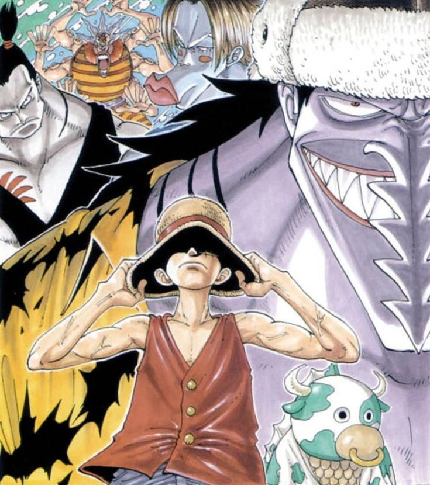
The **Arlong Park Arc** follows the Straw Hat Pirates as they discover Nami's painful past. Nami had been forced to work for the fish-man pirate Arlong, who had taken over her village and promised to free it if she paid a huge amount of money. After Arlong betrays her and steals her savings, a heartbroken Nami asks Luffy for help. Luffy and his crew fight Arlong and his pirates, defeating them and freeing the village from their control. Grateful for Luffy's support, Nami officially joins the Straw Hat Pirates and continues her journey to achieve her dream of drawing a map of the entire world.
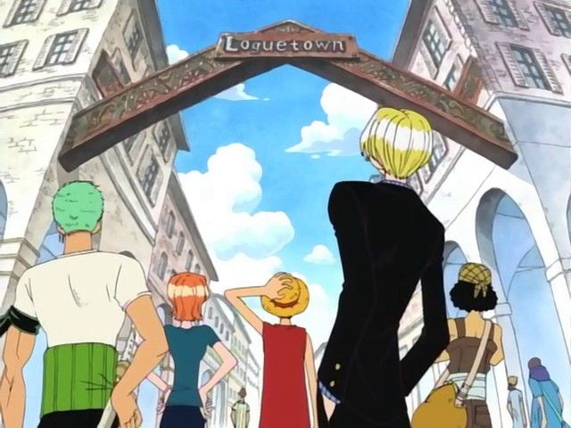
The **Loguetown Arc** is the final arc of the East Blue Saga. Luffy and his crew arrive at Loguetown, the town where the Pirate King, Gol D. Roger, was born and executed. While preparing to enter the Grand Line, Luffy is captured by Buggy and is nearly executed in the same place where Roger died. A sudden lightning strike saves Luffy, allowing him to escape. The crew also encounters the powerful Marine Captain Smoker, who begins pursuing Luffy. After leaving Loguetown, the Straw Hat Pirates set sail for the Grand Line, where their greatest adventures begin.

The **Reverse Mountain Arc** begins as the Straw Hat Pirates reach Reverse Mountain, the entrance to the Grand Line. Instead of sailing around the mountain, they travel up a powerful river and descend into the Grand Line. During their journey, they accidentally crash into a giant whale named Laboon, who has been waiting for his pirate friends for many years. Luffy promises Laboon that they will meet again after completing their adventure and leaves him with a reason to keep living. The crew then officially enters the Grand Line and continues their search for the legendary treasure, the One Piece.

The **Whiskey Peak Arc** begins when the Straw Hat Pirates arrive at Whiskey Peak, where the townspeople warmly welcome them and throw a grand celebration. However, Luffy and his crew soon discover that the town is actually filled with bounty hunters from the secret organization Baroque Works, who planned to capture them for their bounties. Zoro defeats the bounty hunters, while Luffy mistakenly fights Zoro before learning the truth. The crew also meets Princess Vivi and learns about Baroque Works' plan to overthrow the Kingdom of Alabasta. Luffy agrees to help Vivi save her country, and the Straw Hat Pirates set sail toward their next adventure.

The **Little Garden Arc** begins when the Straw Hat Pirates arrive on Little Garden, a prehistoric island filled with dinosaurs and giant creatures. There, they meet two legendary giant warriors, Dorry and Brogy, who have been fighting each other for over 100 years to settle an old duel. The crew soon learns that the agents of Baroque Works, Mr. 3 and Miss Goldenweek, are trying to capture and kill the giants. Luffy, Zoro, Nami, Usopp, and Vivi work together to defeat the villains and rescue Dorry and Brogy. Inspired by the giants' courage and honor, the Straw Hats continue their journey toward Alabasta.
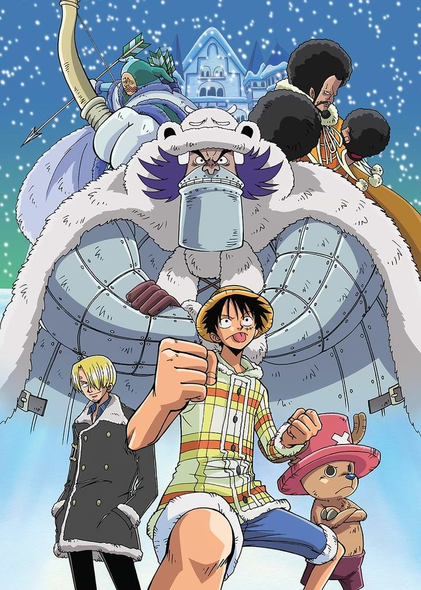
The **Drum Island Arc** begins when Nami becomes seriously ill while the Straw Hat Pirates are sailing toward Alabasta. They arrive at Drum Island, a snowy kingdom without enough doctors, to find treatment for her. There, they meet Dr. Kureha and Tony Tony Chopper, a kind reindeer who gained human abilities after eating a Devil Fruit and dreams of becoming a doctor who can cure any disease. When the former king, Wapol, returns to reclaim the kingdom, Luffy defeats him and restores peace. After Nami recovers, Chopper decides to leave the island and joins the Straw Hat Pirates as their doctor, continuing the journey with his new friends.
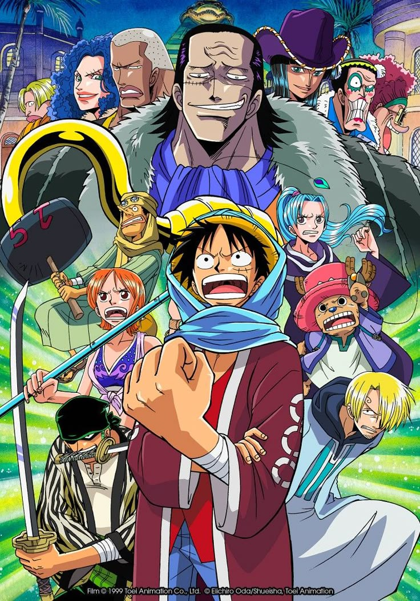
The **Alabasta Arc** follows the Straw Hat Pirates as they travel to the desert kingdom of Alabasta to help Princess Vivi stop a civil war. They discover that the war is being secretly caused by the powerful pirate Crocodile, one of the Seven Warlords of the Sea and the leader of Baroque Works, who plans to take over the kingdom. Luffy fights Crocodile in a series of intense battles and finally defeats him, saving Alabasta and exposing his crimes to the world. Although Vivi chooses to stay and protect her kingdom, she remains a close friend of the Straw Hats. Before leaving, Nico Robin, a former member of Baroque Works, joins the crew, beginning a new chapter in their adventure.

The **Jaya Arc** begins when the Straw Hat Pirates arrive on Jaya Island in search of clues about the legendary Sky Island, Skypiea. Most people laugh at Luffy and his crew for believing that an island exists in the sky, but Luffy refuses to give up on his dream. They meet the pirate Marshall D. Teach, who encourages people to chase their dreams, and later encounter the powerful pirate Bellamy, who mocks and attacks them. Instead of seeking revenge immediately, Luffy focuses on his goal. With help from the explorer Mont Blanc Cricket, the crew prepares to ride the Knock Up Stream, a giant column of water that launches their ship into the sky, beginning their journey to Skypiea.

The **Skypiea Arc** begins when the Straw Hat Pirates use the powerful Knock Up Stream to reach Skypiea, a mysterious island in the sky. They discover a land filled with unique people, ancient ruins, and a conflict between the Skypieans and the Shandians. The self-proclaimed god, Enel, rules Skypiea with fear and plans to destroy the island using his lightning powers. Since Luffy's rubber body is immune to electricity, he is able to defeat Enel and save Skypiea. The arc also reveals important clues about the ancient city of Shandora and the Poneglyphs, bringing Robin one step closer to uncovering the world's true history.
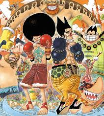
The **Long Ring Long Land Arc** begins when the Straw Hat Pirates arrive on a strange island where everything is unusually long and stretched. There, they meet the playful but cunning pirate Foxy, who challenges Luffy to the Davy Back Fight, a series of games where the winning crew can take members from the losing crew. Although Foxy uses tricks and cheating to win, Luffy and his crew overcome every challenge through teamwork and determination. In the final match, Luffy defeats Foxy and keeps his crew together. After leaving the island, the Straw Hats continue their journey toward Water 7, where even greater adventures await.

The **Water 7 Arc** begins when the Straw Hat Pirates arrive at the famous city of Water 7 to repair their damaged ship, the Going Merry. They meet the shipwrights of Galley-La Company and discover that the Merry can no longer be repaired, causing a painful conflict between Luffy and Usopp. At the same time, Nico Robin suddenly disappears and is accused of working with dangerous criminals. The crew learns that the secret government organization CP9 has been hiding in Water 7 and is using Robin for its own plans. Determined to save their friend, Luffy and the Straw Hats set out to rescue Robin, leading directly into the dramatic Enies Lobby Arc.

The **Enies Lobby Arc** follows the Straw Hat Pirates as they launch a daring mission to rescue Nico Robin from the World Government. Robin had surrendered herself to protect her friends, but Luffy refuses to abandon her. At Enies Lobby, the crew declares war on the World Government by burning its flag and fights the powerful CP9 agents. During the battle, Robin finally admits that she wants to live, and the Straw Hats risk everything to save her. Luffy defeats Rob Lucci in a fierce battle, and the crew escapes safely. Although they save Robin, they are forced to say an emotional goodbye to their beloved ship, the Going Merry, whose journey comes to an end.
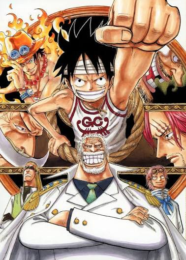
The **Post-Enies Lobby Arc** takes place after the Straw Hat Pirates successfully rescue Nico Robin and escape from Enies Lobby. The crew says a heartbreaking farewell to the Going Merry, which had carried them through many adventures, and receives a new ship, the **Thousand Sunny**, built by Franky. Franky officially joins the Straw Hat Pirates as their shipwright. During this time, Luffy also reunites with his grandfather, Monkey D. Garp, and learns that his father is Monkey D. Dragon, the leader of the Revolutionary Army. The arc ends with the Straw Hats setting sail on the Thousand Sunny, ready for their next adventure.
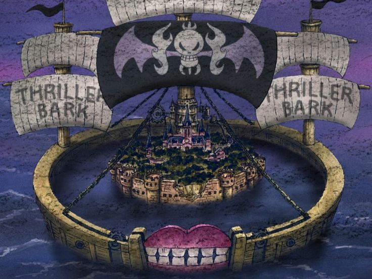
The **Thriller Bark Arc** begins when the Straw Hat Pirates arrive at Thriller Bark, a mysterious island-sized ship covered in fog. They soon discover that the pirate Gecko Moria is stealing people's shadows and using them to create a powerful zombie army. Luffy and his crew battle Moria and his followers to free the victims and restore their shadows before sunrise. After an intense fight, Luffy defeats Gecko Moria and saves everyone trapped on the island. The musician Brook, who had lost his shadow many years earlier, finally gets it back and joins the Straw Hat Pirates as their musician. The arc also features Zoro's unforgettable act of loyalty, where he silently endures Luffy's pain to protect his captain.

The **Sabaody Archipelago Arc** begins when the Straw Hat Pirates arrive at the Sabaody Archipelago to prepare for their journey to Fish-Man Island. There, they witness the cruelty of the World Nobles, known as the Celestial Dragons, who treat people as slaves. After Luffy punches a Celestial Dragon to protect his friends, powerful Marines, an Admiral, and the Warlord Bartholomew Kuma are sent to stop the crew. Despite fighting bravely, the Straw Hats are completely overwhelmed, and Kuma uses his mysterious powers to send each crew member to a different island. For the first time, the Straw Hat Pirates are separated, leaving Luffy devastated and setting the stage for the events that follow.
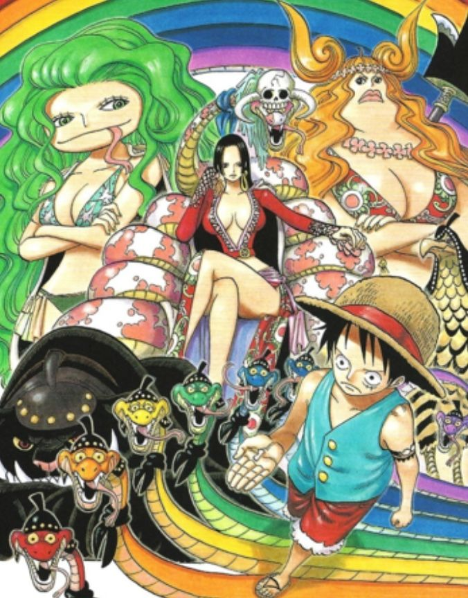
The **Amazon Lily Arc** begins after Bartholomew Kuma sends Luffy to Amazon Lily, an island inhabited only by women and ruled by the Pirate Empress, Boa Hancock. At first, the Kuja tribe sees Luffy as an intruder, but his kindness and courage earn their respect. Boa Hancock, who initially dislikes men, falls in love with Luffy after witnessing his selfless nature. When Luffy learns that his brother, Portgas D. Ace, is going to be executed by the Marines, Hancock decides to help him. With her assistance, Luffy secretly travels to the great underwater prison, Impel Down, determined to rescue Ace.
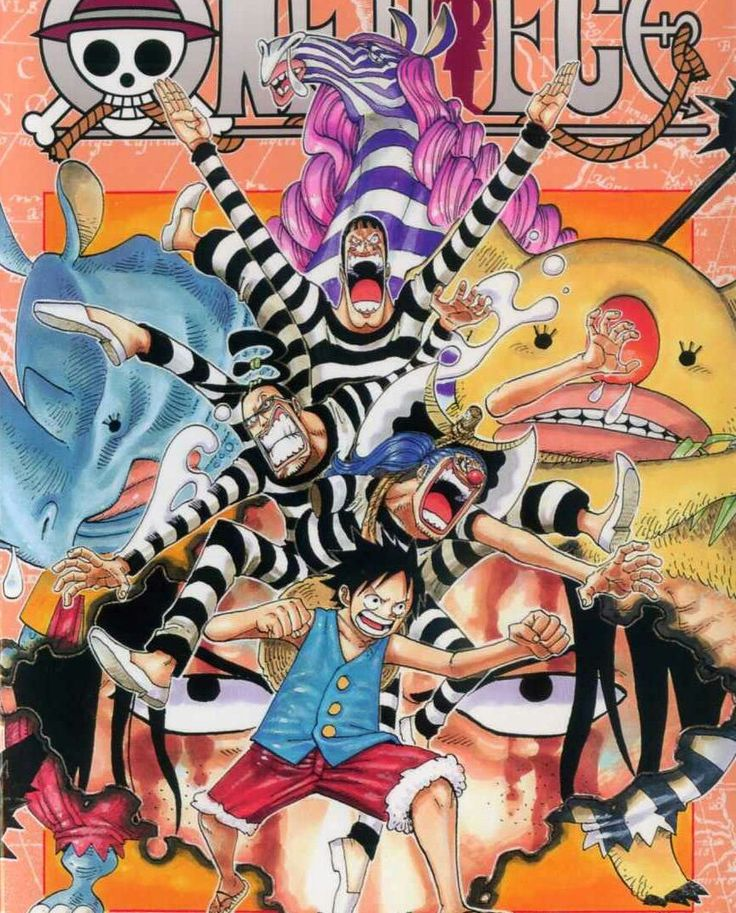
The **Impel Down Arc** begins when Luffy infiltrates Impel Down, the world's greatest underwater prison, to rescue his brother, Portgas D. Ace, before his execution. Along the way, he battles powerful guards, survives deadly prison levels, and forms unexpected alliances with former enemies such as Buggy, Mr. 3, and Emporio Ivankov. Although Luffy fights his way to the deepest levels of the prison, he arrives too late, as Ace has already been taken to Marineford for his execution. Luffy and the escaped prisoners break out of Impel Down and rush toward Marineford, setting the stage for the greatest war in One Piece.
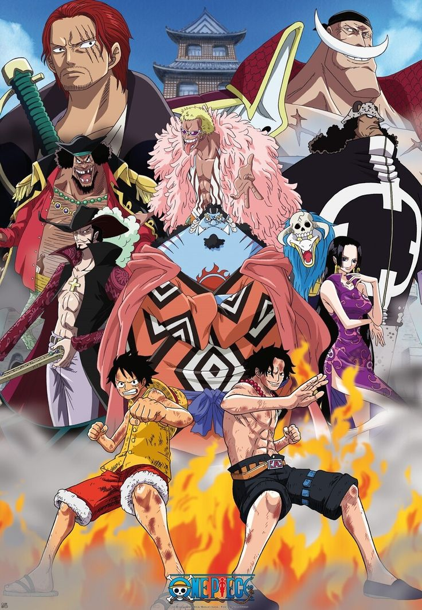
The **Marineford Arc** is one of the most important and emotional arcs in *One Piece*. Luffy arrives at Marineford with the escaped Impel Down prisoners to rescue his brother, Portgas D. Ace, who is scheduled to be executed by the Marines. A massive war erupts between the Marines, led by the Fleet Admiral and the Admirals, and the Whitebeard Pirates, who come to save Ace. After an intense battle, Luffy successfully frees Ace, but Admiral Akainu kills him while Ace protects Luffy. Whitebeard continues fighting to protect his crew before sacrificing his life, confirming that the One Piece is real. The war ends with heavy losses, changing the balance of power in the world and leaving Luffy heartbroken by Ace's death.

The **Post-War Arc** follows the aftermath of the Marineford War, where Luffy struggles with the grief of losing his brother, Portgas D. Ace. With the support of Jinbe and memories of his childhood with Ace and Sabo, Luffy regains his determination to continue his journey. Realizing that he and his crew are not yet strong enough to survive in the New World, Luffy sends a secret message to the Straw Hat Pirates to postpone their reunion for two years. During this time, each crew member begins intense training to become stronger, preparing for the challenges that await them in the second half of the Grand Line.

The **Return to Sabaody Arc** takes place two years after the Marineford War. After completing their individual training, the Straw Hat Pirates reunite at the Sabaody Archipelago, each having become much stronger. Luffy, Zoro, and Sanji easily defeat the fake Straw Hat crew and demonstrate their new abilities, including Haki. The crew successfully escapes the Marines and boards the Thousand Sunny. Together, they set sail beneath the ocean toward Fish-Man Island, marking the beginning of their adventure in the New World.
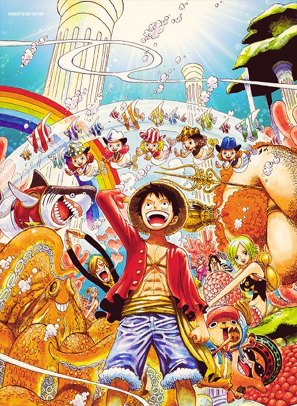
The **Fish-Man Island Arc** begins when the Straw Hat Pirates arrive at Fish-Man Island, a kingdom located deep beneath the ocean. They discover growing tension between humans and fish-men, fueled by years of discrimination and hatred. The crew faces Hody Jones and his New Fish-Man Pirates, who seek to take over the kingdom through violence. Luffy defeats Hody and protects the island, earning the trust of its people. The arc also reveals important information about the ancient weapon Poseidon and strengthens the bond between the Straw Hats and the Fish-Man Kingdom as they continue their journey into the New World.
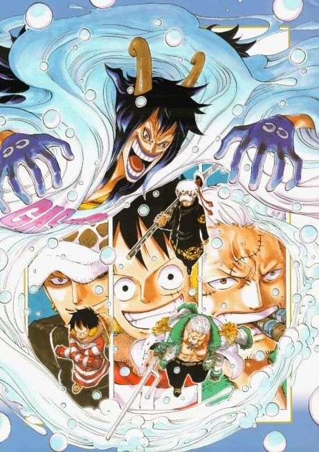
The **Punk Hazard Arc** begins when the Straw Hat Pirates respond to a mysterious distress call and arrive at Punk Hazard, a dangerous island divided into icy and fiery regions due to a past battle between two Admirals. There, they meet Trafalgar Law, who proposes an alliance with Luffy to defeat one of the Four Emperors, Kaido. The crew also discovers that the scientist Caesar Clown is conducting cruel experiments on children and producing deadly chemical weapons. Luffy defeats Caesar, rescues the kidnapped children, and destroys Caesar's plans. The arc marks the beginning of Luffy and Law's alliance and sets the stage for the battle against Kaido.
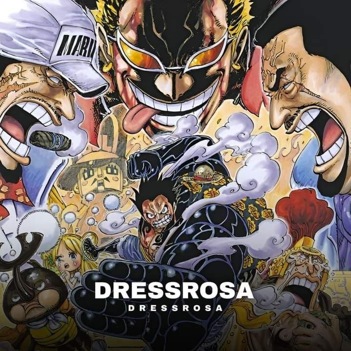
The **Dressrosa Arc** follows the Straw Hat Pirates and Trafalgar Law as they travel to the kingdom of Dressrosa to defeat Donquixote Doflamingo, one of the Seven Warlords of the Sea and the ruler of the kingdom. They discover that Doflamingo has taken control of Dressrosa through deception and turned many people into toys using the powers of the Hobby-Hobby Fruit. Luffy and his allies lead a massive rebellion to free the kingdom. After an intense battle, Luffy defeats Doflamingo using Gear Fourth, restoring peace to Dressrosa. The arc ends with the formation of the Straw Hat Grand Fleet, as several pirate crews pledge their loyalty to Luffy and promise to support him in the future.
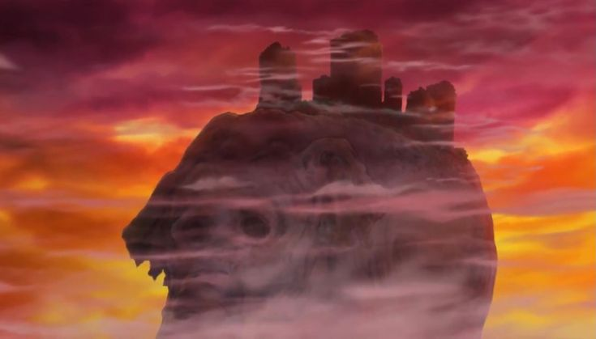
The **Zou Arc** begins when the Straw Hat Pirates arrive on Zou, a giant elephant named Zunesha that carries an entire civilization on its back. There, they reunite with Sanji's group and meet the Mink Tribe, who reveal that they were attacked by Jack, one of Kaido's commanders, but refused to betray their allies. The crew learns that Sanji has been taken to Whole Cake Island for a political marriage arranged by his family, the Vinsmokes, and Big Mom. They also discover the first Road Poneglyph, which is essential for finding the final island, Laugh Tale. Luffy decides to split the crew, with one group leaving to rescue Sanji while the others prepare for the battle against Kaido in Wano.
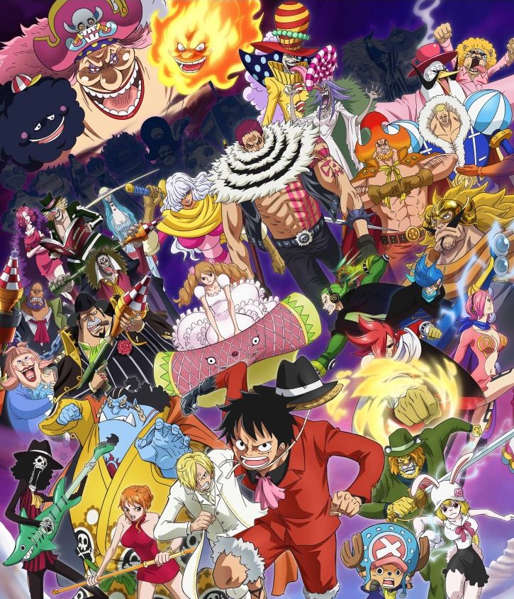
The **Whole Cake Island Arc** follows Luffy, Nami, Chopper, Brook, and Pedro as they travel to Big Mom's territory to rescue Sanji from a forced marriage with Charlotte Pudding. They discover that the wedding is part of Big Mom's plan to destroy the Vinsmoke Family and strengthen her own power. Luffy refuses to leave without Sanji, leading to an emotional reunion between the two friends. During the escape, Luffy fights Charlotte Katakuri in a long and intense battle, defeats him, and grows significantly stronger. With the help of their allies, the Straw Hats successfully escape Whole Cake Island with Sanji, although Pedro sacrifices his life to help them, setting the stage for the coming battle in Wano.
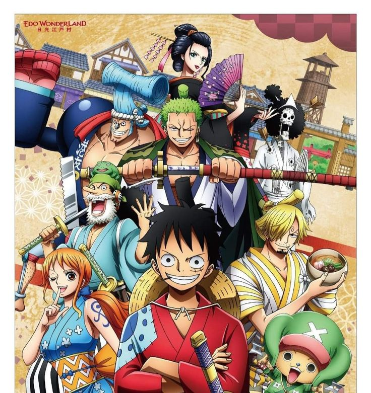
The **Wano Country Arc** follows the Straw Hat Pirates as they arrive in the isolated land of Wano to help the samurai overthrow the tyrannical rule of Kaido and the shogun Orochi. Luffy reunites with Trafalgar Law, the samurai, and many allies to launch a raid on Onigashima. During the massive battle, the alliance fights Kaido's Beast Pirates and Big Mom's forces. Luffy unlocks his awakened Devil Fruit, **Gear Fifth**, and defeats Kaido after an epic battle, while Law and Kid defeat Big Mom. Wano is finally liberated after years of oppression, Momonosuke becomes its new shogun, and Luffy is recognized as one of the Four Emperors (Yonko), bringing him one step closer to becoming the King of the Pirates.
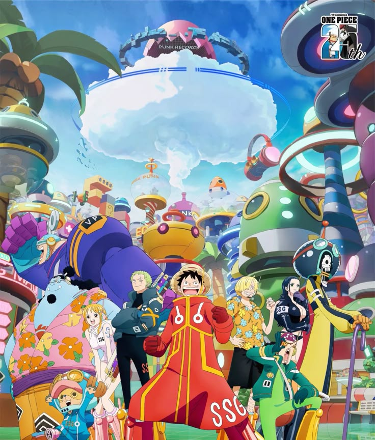
The **Egghead Island Arc** begins when the Straw Hat Pirates arrive at Egghead, the futuristic island of the brilliant scientist Dr. Vegapunk. They learn about advanced technology, the secrets of the Ancient Kingdom, and the true history hidden by the World Government. As powerful enemies, including CP0 and the Marines, attack the island, Luffy and his crew fight to protect Vegapunk and help him escape. During the conflict, shocking truths about the Void Century, Joy Boy, the Ancient Weapons, and the World Government are revealed to the world. The arc ends with the Straw Hat Pirates leaving Egghead after a massive battle, while the world enters a new era of chaos and moves closer to the final race for the One Piece.
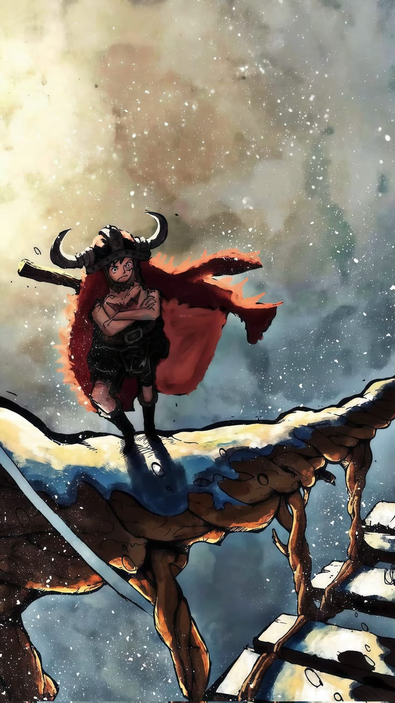
The **Elbaf Arc** begins when the Straw Hat Pirates finally arrive at Elbaf, the legendary land of the giants, after leaving Egghead Island. Luffy reunites with the giant warriors Dorry and Brogy and explores a kingdom known for its proud warrior culture and ancient history. As the crew uncovers secrets connected to the Void Century, Joy Boy, and the World Government, they face powerful new enemies and unexpected challenges. The arc also reveals important information about the world's hidden past and brings Luffy one step closer to Laugh Tale and the legendary treasure, the One Piece, making Elbaf one of the most important arcs in the Final Saga.
Luffy's journey is leading toward: